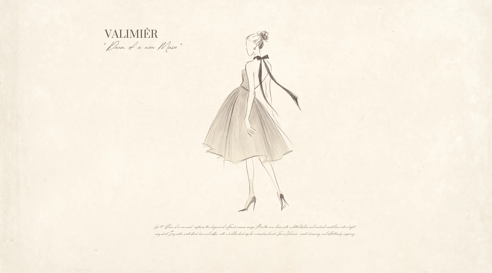

OUR STORY
2024
BLOOMING
FOR BELOVED
It began with crafting radiant,
elegant flowers for a loved one,
an ode to timeless love,
brought to life by Aimée.
@aimeethebouquet

2025
INSPIRED TO
LOVE YOURSELF
A new vision emerged:
to embrace womanhood, celebrate
self love, and empower women.
THE BIRTH
OF VALIMIÉR
Valimiér combines Valen and Mier, derived from Meri or Merry (happiness), Mary (women's name).
Symbolizing women fulfilled
by happiness and loved.

FROM PETALS
TO PATTERNS
Roses transformed
into patterns, inspiring clothing
that reflects the diverse
and authentic identities of women.
CRAFTSMANSHIP
IN THAILAND
Meticulous craftsmanship
in Thailand, bringing refined
artistry to the world.